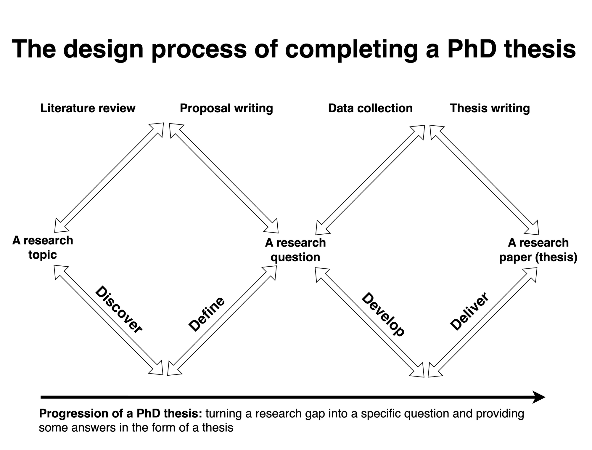
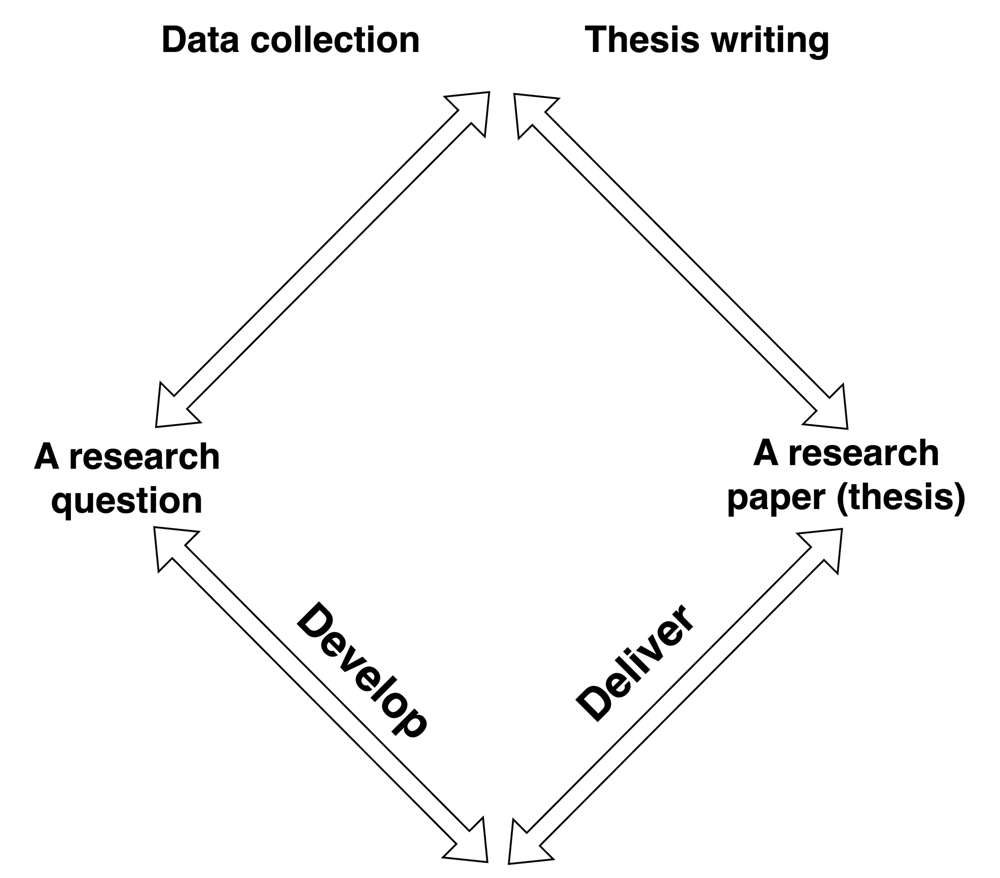
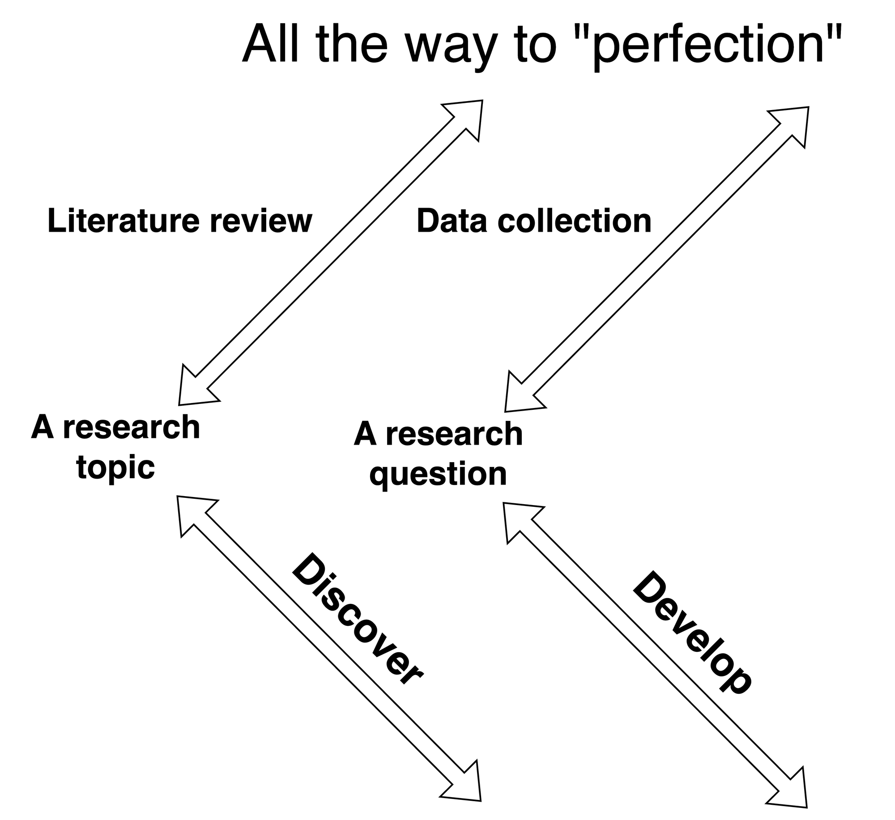
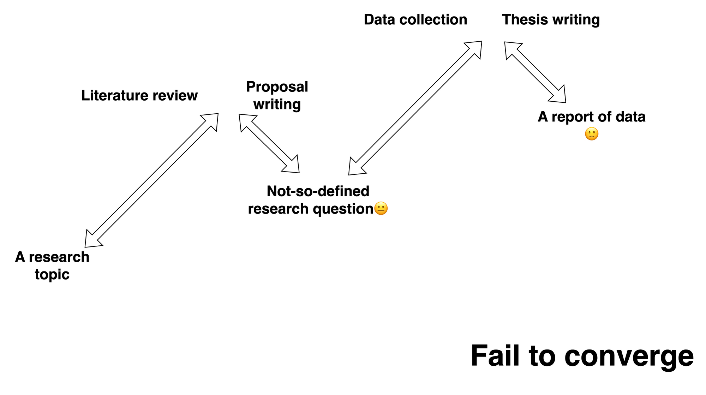

Discover
The discover phase seeks to understand the problem through engagement with people and processes that are directly affected by the issue.
This framework transforms a broad research gap into a focused question and provides meaningful answers through a completed doctoral thesis.
01 · The framework
The Double Diamond represents a design process with four phases that alternate between divergent exploration and convergent synthesis.
Diagram 1 · The complete PhD Double Diamond
Explore broadly ↔ synthesise deliberately
The discover phase seeks to understand the problem through engagement with people and processes that are directly affected by the issue.
Insights gathered during discovery support the definition of a specific research challenge that can be examined from a new perspective.
A clearly defined challenge may support several solutions, which can be developed collaboratively by engaging experts with complementary perspectives.
Potential solutions are validated before the best-performing approach is packaged and delivered to the users who need it most.
02 · A narrow perception
The visible phases of research, including data collection and paper writing, can overshadow the question-forming work that gives both activities meaning.
Oftentimes, we associate research with collecting data in laboratories and the field, and writing papers as preparation for future scientists.
These activities can reinforce a narrow stereotype of doctoral research that emphasizes long working hours and extensive data collection.
Many training resources are organised around these objectives, including laboratory training, programming workshops, and scientific-writing support provided by universities.
The academic environment rewards development through data collection and delivery through research papers, which can encourage incoming PhD students to prioritize laboratory work and publication.
Diagram 2 · The compressed view of research
Question → data → paper
03 · Loss in divergence
PhD progression contains two divergent phases, covering discovery through literature review and development through experimental data collection.
During these phases, PhD students broaden their knowledge across topics and conduct experiments to generate relevant data.
Much of this work can be measured using reviewed papers, laboratory hours, and the number of samples processed each day.
Quantifiable results support project management, but they can also intensify concerns about insufficient progress that are associated with impostor syndrome.
Reading literature and conducting experiments can become “addictive” during divergent phases because many research directions and scientific methods appear worth pursuing.
PhD students can become lost in this garden maze of divergent activity and lose focus on the research questions or gaps they initially identified.
PhD students may worry that they are not doing as much as they could, even when that concern is unnecessary.
Diagram 3 · Divergence without return
All the way to “perfection”
04 · Failure to converge
A prolonged focus on divergent activity can reduce the time available for proposing research questions and writing papers, which both require synthesis.
Diagram 4 · Broken convergence
Activity continues; synthesis weakens
“Far better an approximate answer to the right question, which is often vague, than an exact answer to the wrong question, which can always be made precise.” John Tukey
During the define phase, literature sources must be organised into themes to reveal patterns and opportunities for new research.
This iterative process requires repeated thinking and rethinking before a coherent and defensible research question can be established.
Defining the right research question is often the most challenging part of a PhD thesis because divergent activities create numerous distractions.
Consequently, synthesising a genuinely new question requires deliberate attention and sufficient time for examining connections across the available evidence.
Convergence returns during delivery because manuscript writing requires researchers to analyse and synthesise study data into a coherent narrative with scientific significance.
In many applied fields, there is a fine line between a research article and a report of data.
Both outputs may provide practical value and remain scientifically sound, although their contributions to scientific understanding can differ substantially.
A strong research article therefore requires deeper discussion and more critical analysis of the reported experimental data.
The research paper represents the final product for users across the scientific community, downstream application fields, and the interested general public.